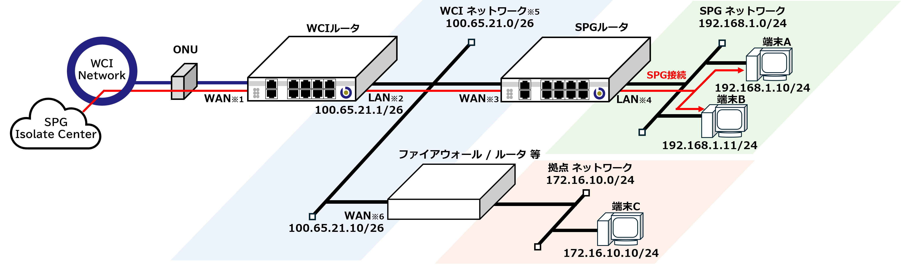
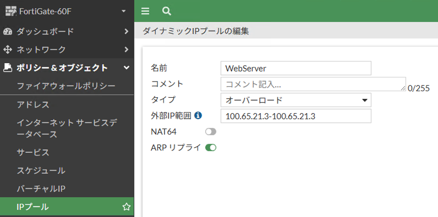

2.3. SPGと連携する
WCIルータとファイアウォール/ルータ等のセキュリティアプライアンスを接続する構成のおいて、SPGを組み合わせて使用する際の構成事例を紹介します。SPG用ネットワークとWCIで利用する拠点ネットワークを分けて構成します。
1. 接続構成
接続構成図
{kind=link}
注意
※1,2 導入機種により接続ポートが異なります。詳しくは" 1.2. WCIルータについて "の導入機種に応じたポート対応表をご確認下さい。
※3,4 導入機種により接続ポートが異なります。SPGのご契約内容をご確認ください。
※5 SPGを使用する場合、ご利用できないWCIアドレスが存在します。詳細については後述します。
SPGネットワーク
拠点ネットワーク
2. セキュリティアプライアンスについて
3. WCIポータルの設定
WCI Portal (https://portal.bbwci.net)にアクセスしログインします。
サブネットの登録
{kind=link}
{kind=link}
注意

[サブネット名] に名称を設定します。
sample_subnet[プレフィックス] を指定します。プレフィックスは任意のサイズを割り当てることが可能ですが本事例では
/29を設定します。- [ネットワークアドレス] を指定します。今回は
100.65.21.8を設定します。※SPGネットワークとの兼ね合いで指定できないネットワークが存在します。 [登録] ボタンを押下します。

画面に先ほど設定したサブネットが登録されている事を確認します。 このサブネットが拠点ネットワークのアドレス帯となります。
接続
フィルタ管理
4. セキュリティアプライアンスの設定例
物理インターフェース構成
{kind=link}
アドレス設定
WCIアドレスは以下の様に定義されています。
100.64.0.0 ～ 100.127.255.255 (100.64.0.0/10)
FortiGateのGUIダッシュボード画面より [アドレス] → [新規作成] からアドレスを以下の様に編集します。
{kind=link}
|
|
|
100.64.0.0 255.192.0.0 |
スタティックルート設定
[スタティックルート] → [新規作成] から新規スタティックルートを以下の様に編集します。

|
|
|
100.64.0.0 255.192.0.0 |
|
100.65.21.1 |
|
wan1 |
DNS設定
[DNS] からDNS設定を以下の様に編集します。
{kind=link}
|
|
|
指定 |
|
100.65.21.1 |
|
DNS(UDP/53) |
WAN設定
wan1 にWCIルータを接続する構成とするため、 wan1 を選択します。{kind=link}
|
|
|
マニュアル |
|
100.65.21.10/255.255.255.192 |
注意
本事例におけるSPGシステム予約サブネット範囲のIPアドレスは設定しないでください。
LAN設定(拠点ネットワーク)
internal1 配下に拠点ネットワークBを構成するため、 internal1 を選択します。{kind=link}
|
|
|
マニュアル |
|
172.16.10.1/255.255.255.0 |
DNSサービス設定(拠点ネットワーク)
internal1 のアドレスをDNSサーバとして設定する事でDNSの通信をWCIルータに転送できます。{kind=link}
|
|
|
internal1 |
|
システム設定DNSへ転送 |
ポリシー設定(拠点ネットワーク)
{kind=link}
|
|
|
internal1 |
|
wan1 |
|
all |
|
WCI(アドレス設定で作成したもの) |
|
ALL |
※ 送信元 , サービス は利用用途に応じて適切に設定してください。
NAT を有効化します。
|
|
|
発信インタフェースアドレスを使用 |
適切なセキュリティプロファイルを設定します
これで、拠点ネットワークBからWCI Portalや他接続拠点で公開されているサービスへのアクセスが可能となります。端末からの通信はNAPTにて、ファイアウォールのアドレス 100.65.21.10 に変換されます。